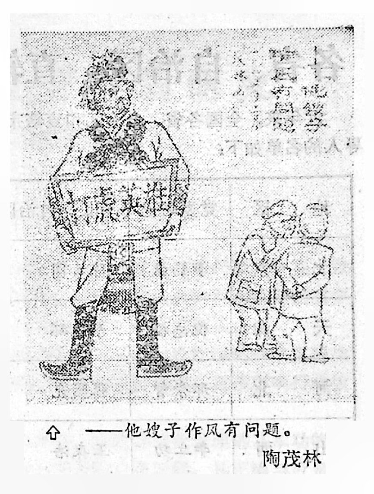

陶茂林 《人事》1985年第2期（总第2期），第47页
无题
Untitled (“His sister-in-law's conduct is questionable”)
- Caption
- ——他嫂子作风有问题。
—His sister-in-law has problems with her conduct. - Text in the drawing
- 打虎英雄
Tiger-slaying hero - Description
- Wu Song, the tiger-slaying hero, stands with his hero's placard while two men behind him whisper about his sister-in-law.
- Note
- Wu Song's sister-in-law is Pan Jinlian, the adulteress of Water Margin. The cartoon mocks political vetting that blocked capable people over a relative's record.
- Artist
- Tao Maolin 陶茂林
- Published in
- 《人事》1985年第2期（总第2期）, p. 47
- Themes
- Talent and its neglect · Fable, legend and history

Cite
Tao Maolin, “无题” [Untitled (“His sister-in-law's conduct is questionable”)], Renshi (Personnel) 《人事》, 1985, no. 2, p. 47.